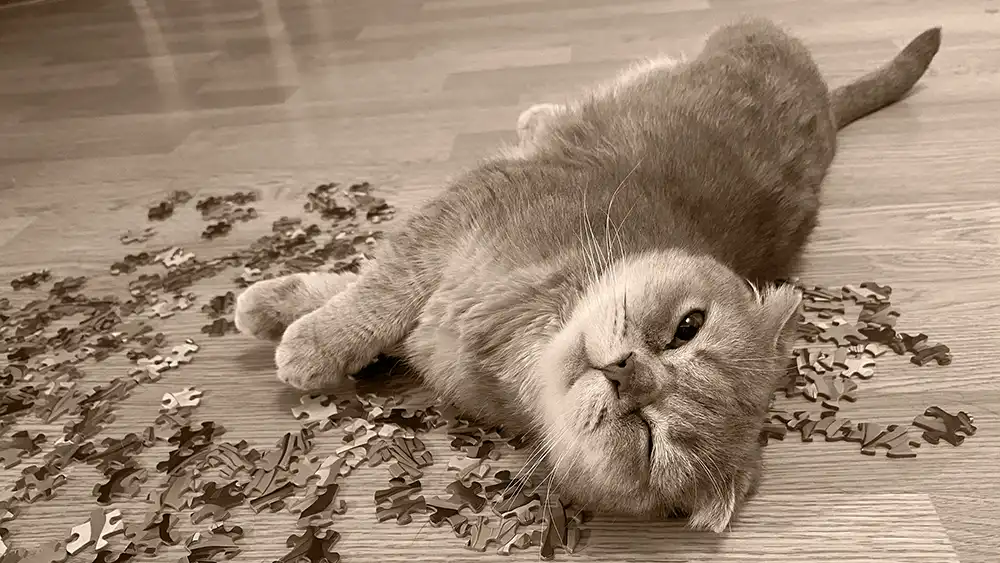

<aside id="blog-1289" class="related-post" aria-label="Related article">
    <div class="cs-item cs-highlight">
        <a href="/blog/why-untemplate/" class="cs-link">
            <picture class="cs-picture">
                
            </picture>
            <div class="cs-flex">
                <span class="cs-topper">If this hit, read this next.</span>
                <h2 class="aside-title">{{ blogs.whyStory.title }}</h2>
                <p class="cs-item-text">
                    {{ blogs.whyStory.description }}
                </p>
            </div>
        </a>
    </div>  
</aside>